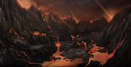

Northrend opens to level 80 heroes. Death Knights join the fray, flying mounts return in a frozen continent, and the Lich King's grip tightens from Icecrown. Three raids launch the Wrath tier — familiar names, deadly new mechanics.
Kel'Thuzad returns with redesigned wings and modernized tuning. A 10- and 25-player entry point for Wrath progression, dropping tier 7 and staple emblem gear.
Malygos has declared war on mortal magic. The Aspect of Magic himself tests your raid in a circular arena where standing still means death.
Sartharion guards the black dragon eggs. Leave drakes alive for greater challenge and richer rewards — or burn them down for a cleaner kill.

Arthas watches. Prove you are worth his attention.